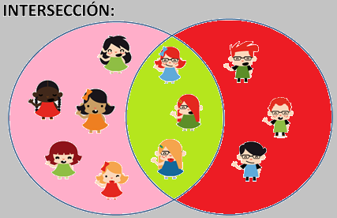
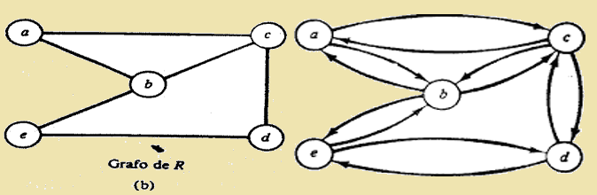

Una forma frecuente de representar un conjunto es mediante un óvalo, una porción del plano con forma más o menos redondeada. En la figura adjunta de muestra un ejemplo.
Al meter al conjunto B dentro de A se quiere indicar que B ⊂ A. El complementario de B respecto de A es la parte de A que no es B
En matemáticas, un conjunto es una colección de elementos con características similares considerada en sí misma como un objeto. Se dice que un elemento (o miembro) pertenece al conjunto si está definido como incluido de algún modo dentro de él. Ejemplo: el conjunto de los colores del arcoíris es: AI = {Rojo, Naranja, Amarillo, Verde, Azul, Añil, Violeta} Los conjuntos pueden tener elementos de cualquier tipo: números, letras, objetos, personas… Por ejemplo, este conjunto contiene frutas:
El conjunto de «personas» mostrado en la imagen, A, tiene 8 miembros. Este conjunto puede representarse mediante llaves o mediante un diagrama de Venn. El orden de las personas en A es irrelevante.
En las matemáticas, un conjunto B es subconjunto de un conjunto A si B «está contenido» dentro de A.
Existen varias operaciones básicas que pueden realizarse, partiendo de ciertos conjuntos dados, para obtener nuevos conjuntos:
Los conjuntos pueden clasificarse en función de su número de elementos, en:
Relaciones entre conjuntos
En función de sus relaciones entre ellos, los conjuntos pueden ser:
Son aquellos que no tienen ningún elemento en común. Por ejemplo, los conjuntos de frutas y de animales son disjuntos, porque no hay ninguna fruta que sea un animal, ni ningún animal que sea una fruta:
Se da cuando todos los elementos de un conjunto pertenecen al otro. Por ejemplo, el conjunto de frutas rojas y el conjunto de frutas amarillas son subconjuntos del conjunto de frutas, puesto que todas las frutas rojas son frutas, y todas las frutas amarillas son frutas también:
El conjunto de los seres vivos es muy grande: tiene muchos subconjuntos, por ejemplo:
A veces, varios conjuntos son distintos, pero comparten algunos elementos comunes. Entonces se define una zona de intersección entre ambos, que contiene todos estos elementos comunes. Por ejemplo, tenemos un conjunto de niñas, y otro conjunto de personas con gafas. Como hay niñas que tienen gafas, forman parte de la intersección de los dos conjuntos:
Dados dos conjuntos A y B, la unión de A y B es:
La unión de A y B, es el conjunto de elementos X de U, tal que X pertenezca a A, o que, X pertenezca a B. La operación de unión es asociativa, conmutativa y tiene elemento neutro:
La unión de dos conjuntos presentada anteriormente puede extenderse a varios conjuntos así la unión de un número finito de conjuntos viene dada por "uniones sucesivas":
Definición de la diferencia de conjuntos. Sean A y B conjuntos.
Entonces A \ B := x: x ∈ A ∧ x /∈ B .
Esto significa que para todo x tenemos la siguiente equivalencia:
x ∈ A \ B ⇐⇒ x ∈ A ∧ x /∈ B.
Diagramas de Euler-Venn Ejemplo: Diferencia de conjuntos.
A \ B consiste de todos los puntos que pertenecen al conjunto A y al mismo tiempo no pertenecen al conjunto B.
4. Unión de conjuntos. A ∪ B consiste de todos los puntos . . .
5. Intersección de conjuntos.
A ∩ B consiste de todos los puntos
Relaciones de contención entre la intersección, la unión y los conjuntos originales
Como demostrar la contención de un conjunto en el otro. Sean A y B conjuntos. Se dice que A este contenido en B si cualquier elemento del conjunto A pertenece también al conjunto B. Formalmente esto significa que para cualquier x la afirmación x ∈ A implica la afirmación x ∈ B. Ejemplo. Sean A y B conjuntos arbitrarios. Demostrar que
A ∩ B ⊆ A
Solución. Plan de la demostración: considerar un elemento arbitrario del conjunto A ∩ B y demostrar que este elemento pertenece al conjunto A. Sea x ∈ A ∩ B. Por definición de la intersección esto significa que x ∈ A y x ∈ B. En particular,
esto implica que x ∈ A.
6. En la demostración anterior se usa la regla lógica a ∧ b) →
Demuestre esta regla usando tablas de verdad
Conjuntos Se partir ‘a, en esta introducción, de la existencia intuitiva de unos entes matemáticos que se denominaran conjuntos. Definición 3. Un conjunto es una colección de objetos bien definidos y diferenciables entre si. A los objetos que constituyen un conjunto se les denomina elementos del mismo. Los conjuntos se designan, habitualmente, por letras latinas mayúsculas: A, B, . . . y los elementos por letras latinas minúsculas: a, b, . . .; si a es un elemento del conjunto A, se dirá que a pertenecer al conjunto A, y se escribir ‘a a ∈ A. En caso contrario, se dirá que el elemento no pertenece al conjunto y se denotar ‘a a 6∈ A. 1 Al conjunto que carece de elementos se le denomina conjunto vacío, y se denota por ∅ o por { }. Ejemplos 1. La proposición “Todos los alumnos que aprobaran Matemáticas en junio” no define adecuadamente un conjunto puesto que, dado un alumno, no se puede afirmar de antemano si aprobar ‘a o no en junio. Un conjunto puede ser definido por extensión, enumerando todos y cada uno de sus elementos, o por comprensión, diciendo cual es la propiedad que los caracteriza. 1Un conjunto A esta bien definido cuando, dado un elemento cualquiera x, es cierta una y solo una, de las proposiciones x ∈ A y x 6∈ A.
CONJUNTOS, APLICACIONES Y RELACIONES
Ejemplos 2. Algunos conjuntos definidos por comprensi´on: A = {x ∈ Z; x 2 ≤ 16} B = {x ∈ N ; x divide a 20} ∅ = { } Ejemplos 3. Los mismos conjuntos definidos por extensi´on: A = {0, 1, 2, 3, 4, −1, −2, −3, −4} B = {1, 2, 4, 5, 10, 20} Como se aprecia en este ejemplo, se utilizan las llaves “{” y “}” para delimitar los elementos que componen un conjunto.
Llamamos relación binaria a la relación R existente entre dos elementos a y b, de dos conjuntos A y B respectivamente. Indicando que el elemento a está relacionado con b. Esta relación se puede denotar de diversas formas:
Está relación dependiendo del conjunto puede referirse a cualquier concepto referido con el conjunto
Ejemplo: Sea el conjunto A={el conjunto de los números naturales}, una relación binaria del conjunto de A sobre sí mismo puede ser, R= ser múltiplo de.
De tal forma que, por ejemplo 4 está relacionado con 2 (es decir, 4 es un múltiplo de 2), por tanto escribimos 4R2 o (4,2).
En el caso de no estar relacionados escribiremos a no está relacionado con b tachando la R. Un ejemplo de dos elementos que no están relacionados con esta relación son 3 y 5.
Observación: El conjunto R(A x B) de todos los elementos que están relacionados es un subconjunto del producto cartesiano A x B. FORMAS DE REPRESENTACIÓN
Para representar las relaciones binarias podemos utilizar dos tipos de gráficos:
Ejemplo: Representar la siguiente relación:
R(M)={(a,b), (b,c), (d,b)}
PROPIEDADES DE LAS RELACIONES BINARIAS
Las relaciones binarias pueden cumplir las siguientes propiedades (no tienen por qué cumplir todas, pueden cumplir sólo algunas e incluso ninguna). Dado el conjunto M, y una relación R sobre el conjunto M x M
Dependiendo de las propiedades que cumpla una relación determinada, recibe un nombre u otro. Pero esta información la dejaremos para otro día, así como más ejemplos y comprobar estas propiedades.
Producto cartesiano
Producto cartesiano de conjuntos
En matemáticas, el producto cartesiano de dos conjuntos es una operación, que resulta en otro conjunto, cuyos elementos son todos los pares ordenados que pueden formarse de forma que el primer elemento del par ordenado pertenezca al primer conjunto y el segundo elemento pertenezca al segundo conjunto.
El producto cartesiano recibe su nombre de René Descartes, cuya formulación de la geometría analítica dio origen a este concepto.
Dados dos conjuntos A y B, el producto cartesianos de estos dos conjuntos es el conjunto formado por todos los pares ordenados (a,b) donde a es un elemento de A y b es un elemento de B.
Relación
Dados dos conjuntos A y B una relación es un subconjunto del producto cartesiano A x B.
Un elemento a, que pertenece al conjunto A, está relacionado con un elemento b, que pertenece al conjunto B, si el par (a, b) pertenece a un subconjunto G (llamado grafo) del producto cartesiano A x B.
Ejemplo: Sean A = {a, b, c} y B = {1, 2} dos conjuntos. El producto cartesiano A x B = {(a,1), (a,2), (b,1), (b,2), (c,1), (c,2)}. Una relación sería R = {(a,1),(c,2)}.
A las relaciones también se les llama correspondencias.
(Reflexiva, Simétrica, Asimétricas y Transitivas, etc...)
Relaciones Reflexivas e Irreflexivas
Una relación R en un conjunto A es reflexiva si (a, a) £ R para todas las a £ A, esto es, si a R e para todas las a e A. Una relación R en un conjunto A es irreflexiva si a R a para toda a £ A.
Por consiguiente, R es reflexiva si cada elemento a e A está relacionado consigo mismo y es irreflexiva si ningún elemento está relacionado consigo mismo.
Ejemplo 1:
(a) Sea Δ = [(a, a)\ a £ A], de modo que A es la relación de igualdad en el conjunto A. Entonces A es reflexiva, ya que (a, a) £ Δ para todas las a e A.
(b) Sea R = {(a, b) e A x A | a + b}, R es la relación de desigualdad en el conjunto A. Entonces R es irreflexible, ya que (a, a) £ R para todas las x € A.
(c) Sean A = {1, 2, 3}. y Jí = {(1, 1), (1, 2)}. Entonces A es reflexiva
(2,2) R y (.3,3) € R. Por otra parte, R no es irreflexiva, ya que (1, l) € R.
(d) Sea A un conjunto no vacio. Sea R = Ǿ A x A, la relación vacía. Enlaces R no es reflexiva, ya que (a, a) € R para todas las a € A (el conjunto vacío tiene elementos). Sin embargo, R es irreflexiva.
Relaciones Simétricas y Asimétrica
Una relación R en un conjunto A es simétrica si cuando a R b, entonces b R a.
De esto se sigue que R no es simétrica se tiene a y b € A con a R b, pero b R a. Una relación R en un conjunto A es asimétrica si cuando a R b, entonces b Ra.
De esto se sigue que R no es simétrica si se tiene a y b e A con ambos a R b y b R a.
Una relación R en un conjunto A es asimétrica si cuando a R b y b R a, entonces a = b. Otra forma de expresar esta definición es diciendo que R es anti simétrica si cuando a ≠ b, se tiene a R b o b R a. De esto se sigue que R no es anti simétrica si se tiene a y b en A. a ≠ b, y ambas a R b y b R a.
Ejemplo Sea A «= [a, b, c, d, e} y sea R la relación simétrica dada por R = {(a, b), (b, a), (a, c), (c, a), (b, c), (c, b), (b, e), (e, b), (e, a), (a, e), (c,a), (a,c)}
El grafo dirigido de R se muestra en la figura 2(a), mientras que en la figura
Grafo dirigido de R Grafo dirigido de R
Aparece el grado de R. Obsérvese que cada arista no dirigida corresponde a dos pares ordenados en la relación R.
A una relación simétrica R en un conjunto A se le llamará conexa si existe una trayectoria de cualquier elemento de A a cualquier otro elemento de A. Esto significa sencillamente que el grafo de R está todo en una pieza. En la figura 3 se muestran los grafos de dos relaciones simétricas. El grafo de la figura 3(a) está conectado mientras que el de la figura 3(b) no lo está.
Se dice que una relación R en un conjunto A es transitiva si cuando a R b y b R e, entonces a R c. Se sigue que R no es transitiva si y sólo si se puede encontrar elemento a, b y c en A tal que a R b y b R c, pero a R c. Ejemplo: Sea A = Z el conjunto de los enteros y sea R la relación considerada en el ejemplo 2 Para ver si R es transitiva, se supone que a R b y b R c. Por consiguiente, a < b; b < c. Entonces se sigue que a < c, por lo cual a R c. De aquí que R sea transitiva.
Una relación R en un conjunto A es transitiva si y sólo si satisface las siguientes propiedades: Si existe una trayectoria de longitud mayor que 1 del vértice a al vértice b, hay una trayectoria de extensión 1 de a a b (esto es, a está relacionada con b). Establecido algebraicamente, R es transitiva si y sólo si Rn £ R para todas las n ≥ 1.
Es posible caracterizar la relación transitiva por su matriz MR = [mij] así:
si mij =1 y mjk = 1, entonces mik = 1
Para ver qué significa transitividad en términos del grafo dirigido de una relación, se traducirá esta definición a términos geométricos.
Si se examinan los vértices particulares a y c, las condiciones a R b y b R c
ocurrirán si y sólo si existe una trayectoria de longitud 2 de a a c, esto es, si y sólo si a R2 c. Es posible replantear la definición de transitividad como sigue: Si a R2 c, entonces a R c, esto es, R2 £ R (como un subconjunto de A x
Definición. Sea R una relación en un conjunto A. Una cerradura reflexiva ref( R ) de R en A es la “menor” relación que la incluye y que es reflexiva, con símbolos: (∀ R’ reflexiva) (A ⊆ R’ ⊆ ref( R )) ⇒ R’ = ref( R )) Una cerradura simétrica sim( R ) de R en A es la “menor” relación que la incluye y que es simétrica, con símbolos: (∀ R’ reflexiva) (A ⊆ R’ ⊆ ref( R )) ⇒ R’ = ref( R ))
Una cerradura transitiva trans( R ) de R en A es la “menor” relación que la incluye y que es transitiva, con símbolos: (∀ R’ reflexiva) (A ⊆ R’ ⊆ ref( R )) ⇒ R’ = ref( R )
La cerradura reflexiva y la cerradura simétrica de una relación es muy simple de encontrar, solamente se le agregan los pares necesarios de una forma directa. Cuando conocemos la matriz asociada a la relación, la forma de encontrar las cerraduras anteriores es muy simple.
Teorema: Sea R una relación en A y MR su matriz asociada. La cerradura reflexiva y la cerradura simétrica de R son únicas y se pueden obtener mediante las matrices siguientes
Mref(R) = MR ∪ In, donde In es la matriz identidad de orden |A|.
Msim(R) = [a ij], donde a ji = 1 si a ij = 1 en MR.
La Matriz identidad In de orden n es:
{$ {(1,…,0), (vdots, ddots, vdots), (0,…,1)] $}
O sea que para lograr la cerradura reflexiva debemos agregar 1′s en la diagonal, para la cerradura simétrica debemos agregar 1′s en luagres simétricos a la diagonal principal donde existan 1′s.
Cierre de equivalencia
Para calcular el cierre de equivalencia de una relación binaria R sobre un conjunto A:
Calcularemos primero su cierre reflexivo, ρ(R)
Sobre el resultado calcularemos el cierre simétrico, σ(ρ(R))
finalmente el cierre transitivo del resultado anterior, τ (σ(ρ(R)))
Clases de Equivalencia
Al conjunto de los elementos del conjunto A que están relacionados con él se llama clase de equivalencia.
Ejemplo:
La relación a - b = 2.k (múltiplo de 2), siendo a y b números enteros es una relación de equivalencia porque cumple las propiedades: Reflexiva: a - a = 0 = 2.k (k = 0). Simétrica: a - b = b - a porque b - a = -(a - b). Si a - b es múltiplo de 2, -(a - b) también lo será. Transitiva: a - b = 2.k1 b - c = 2.k2 Sumando queda a - c = 2.k3 Entonces a - c es múltiplo de 2.
En el ejemplo anterior, la clase de equivalencia del número cero (uno de los elementos del conjunto de los números enteros) C(0) = {... -4, -2, 0, 2, 4, ...}, pues 0 - (-4) es múltiplo de 2, 0 - (-2) es múltiplo de 2 ya sí sucesivamente. La clase de equivalencia del número 1 será C(1) = {... -5, -3, -1, 1, 3, 5, ...} pues la diferencia entre 1 y los números indicados es múltiplo de 2.
Del mismo modo podríamos calcular las clases de equivalencia de más números.
El conjunto formado por las clases de equivalencia se llama conjunto cociente.
En el ejemplo anterior el conjunto cociente Z / 2 es el conjunto formado por las clases de todos los elementos Z / 2 = {C(0), C(1), C(2), ... }.
Particiones
Sea X un conjunto. P es una partición de X si y sólo si:
Los conjuntos de P son disyuntos 2 a 2, es decir, si y entonces
Observe que si P es una partición de X, entonces todo elemento de X está en uno y sólo un elemento uno y sólo un elemento de modo que parte a en conjuntos disyuntos.
Por ejemplo, el conjunto de barriles propuesto al comienzo de la sección es una partición del conjunto de mangos. Otro ejemplo de una partición es de la división política de un país: El país (visto como un conjunto de personas) se parte en estados o departamentos no vacíos disyuntos entre sí.
Ejemplo
Sea ={1, 2, 3, 4, 5, 6, 7, 8, 9}
Entonces = {{1, 9}, {2, 8}, {3, 4, 5, 6, 7}}
Es una partición de X en tres conjuntos: elementos externos (1,9), elementos semi-externos (2, 8) y elementos internos (3, 4, 5, 6, 7).
Note que Q = {{1, 2, 9}, {2, 8}, {3, 4, 5, 6, 7}} no es partición de X (¿por qué?).
Como lo habíamos insinuado, resulta que toda relación de equivalencia determina de manera natural una partición.
Una función :
es inyectiva o uno a uno y se denota como 1−1, si a diferentes elementos del dominio le corresponden diferentes elementos del codominio. En esta función, para dos valores cualesquiera
de su dominio se cumple que:

Suprayectiva
Una función es suprayectiva o sobre si todo elemento de su Condominio es imagen de por lo menos un elemento de su Dominio, lo que se expresa como:
Otra forma de expresar que una función es sobre es decir que debe cumplir con que su Condominio y su Recorrido sean iguales, esto es:
Biyectiva
Una función es biyectiva si al mismo tiempo es inyectiva y suprayectiva, y la relación entre los elementos del dominio y los del condominio es biunívoca. Una función puede ser:
Entender los conceptos de Relación y de Funcion es de suma importancia en Matemática.
Para lograr esa comprensión es necesario adentrarnos en la noción de Correspondencia, ya que esta tiene un papel fundamental en las relaciones y funciones.
Lo primero es entender que Correspondencia es equivalente a Relación. En nuestra lengua, decir “en relación a”, es equivalente a decir “corresponde a”.
Ejemplos:
En una tienda comercial, cada artículo está relacionado con su precio; o sea, a cada artículo le corresponde un precio.
En la guía telefónica, cada cliente está relacionado con un número; o sea, a cada nombre de la guía le corresponde un número.
Definiciones:
En matemática, Relación es la correspondencia de un primer conjunto, llamado Dominio, con un segundo conjunto, llamadoRecorrido o Rango, de manera que a cada elemento del Dominio le corresponde uno o más elementos del Recorrido o Rango.
Por su parte, una Funcion es una relación a la cual se añade la condición de que a cada valor del Dominio le corresponde uno y sólo un valor del Recorrido.
De las definiciones anteriores podemos deducir que todas las funciones son relaciones, pero no todas las relaciones sonfunciones.
También debemos agregar que toda ecuación es una Relación, pero no toda ecuación es una Función.
Dados dos conjuntos A y B una relación definida de A en B es un conjunto de parejas ordenadas (par ordenado) que hacen verdadera una proposición; dicho de otro modo, una relación es cualquier subconjunto del producto cartesiano A x B
Ejemplo 1.
Si A = {2, 3} y B = {1, 4, 5}, encontrar tres relaciones definidas de A en B. Solución
El producto cartesiano de A x B está conformado por las siguientes parejas o pares ordenados:
A x B = {(2, 1), (2, 4), (2, 5), (3, 1), (3, 4), (3, 5)} Y cada uno de los siguientes conjuntos corresponde a relaciones definidas de A en B:
La relación R1 se puede definir como el conjunto de pares cuyo segundo elemento es 1, esto es, R1 = {(x, y) / y = 1}.
La relación R2 está formada por los pares cuyo primer componente es menor que el segundo componente, R2 = {(x, y) / x < y}
Y la relación R3 está conformada por todos los pares que cumplen con que el segundo componente es dos unidades mayor que el primer componente, dicho de otro modo, R3 = {(x, y) / y = x + 2}
Así, se puede continuar enumerando relaciones definidas a partir de A x B. Como se puede ver, la regla que define la relación se puede escribir mediante ecuaciones o desigualdades que relacionan los valores de x e y. Estas reglas son un medio conveniente para ordenar en pares los elementos de los dos conjuntos.
Ejemplo 2.
Dados los conjuntos C = {1, –3} y D = {2, 3, 6}, encontrar todos los pares ordenados (x, y) que satisfagan la relación
Solución
El producto cartesiano de C x D está formado por los siguientes pares ordenados
Toda relación queda definida si se conoce el conjunto de partida, el conjunto de llegada y la regla mediante la cual se asocian los elementos.
En el ejemplo anterior, el conjunto de partida corresponde al conjunto C, el conjunto de llegada es el conjunto D y la expresión x + y = 3 es la regla que asocia los elementos de los dos conjuntos.
Dominio y rango de una relación
El dominio de una relación es el conjunto de preimágenes; es decir, el conjunto formado por los elementos del conjunto de partida que están relacionados. Al conjunto de imágenes, esto es, elementos del conjunto de llegada que están relacionados, se le denomina recorrido o rango.
Representación gráfica de las relaciones
Los pares ordenados se pueden representar gráficamente por medio de diagramas sagitales o por medio de puntos en el plano cartesiano. Veamos el siguiente ejemplo.
Ejemplo 4
Solución
Los pares ordenados que pertenecen a la relación (que cumplen con y = 2x + 1) son:
Y la gráfica correspondiente es la siguiente: